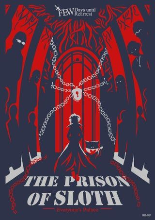
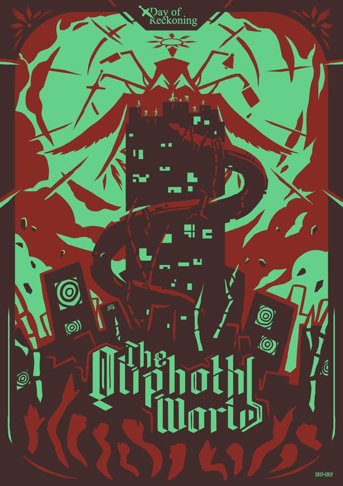
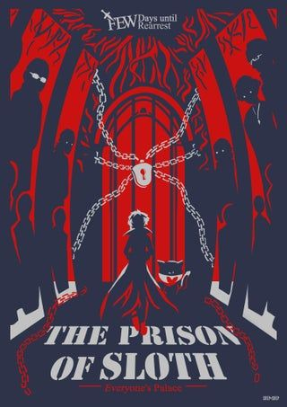
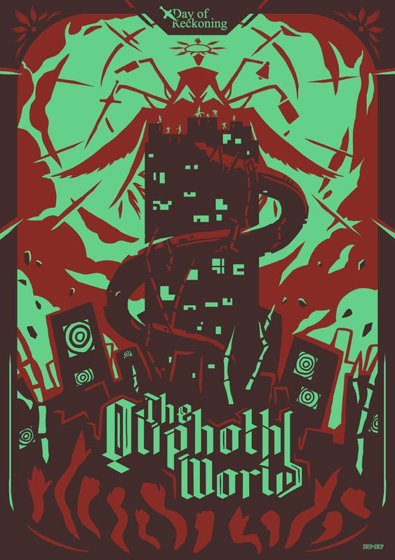

Persona 5 Royal

Personajes

Protagonista
Ren Amamiya es un estudiante transferido en la Academia Shujin. Al comienzo del juego, tiene poco o ningún poder o influencia en el mundo y está restringido por las reglas del sistema en el que nació. Sin embargo, debajo de su comportamiento tranquilo hay un Comodín de voluntad fuerte que lidera a los Ladrones Fantasma y es capaz de explotar el Metaverso para afectar la realidad. Para sus compañeros de equipo, su nombre en clave es Joker, y para los residentes del Habitación Terciopelo es conocido como el Tramposo. El protagonista es el líder de los rebeldes Ladrones Fantasma de Corazones, un grupo que tiene como objetivo cambiar la sociedad tocando el corazón de las personas y realizando atracos ilegales.

Ryuji Sakamoto
Ryuji es conocido como un "estudiante problemático" disruptivo en la escuela cuyo mal comportamiento causa todo tipo de problemas para los maestros. Está bastante orgulloso de su condición de autoproclamado "problemático" y su naturaleza rebelde, traviesa y desobediente son las cualidades perfectas para ser un Ladrón Fantasma

Ann Takamaki
Ann es una chica muy amable y compasiva, lo suficiente como para que Morgana y Sojiro Sakura la noten. Años de aislamiento debido a su aspecto la han dejado muy retraída y con la creencia de que ha perdido su lugar en el mundo, pero eso no le impide abrirse a las personas cercanas a ella y hacer bromas. Esto se debe a que aprendió a no preocuparse por lo que otras personas piensan de ella, una lección que le enseñó Shiho Suzui, quien era su única amiga antes de unirse a los Ladrones Fantasma.

Yusuke Kitagawa
La pasión de toda la vida de Yusuke está compuesta y rodeada de arte. El busca la estética por todas partes en su entorno, desde personas a lugares. Ve cada oportunidad o desafío que se le presenta como una forma de ampliar sus horizontes, y principalmente considera cómo le beneficiará enormemente como artista. Está cautivado por la pintura de "Sayuri" y busca captar el sentido de la belleza que retrata.

Makoto Nijima
A pesar de ser el presidente del consejo estudiantil, Makoto es un estudiante extremadamente impopular en la Academia Shujin; debido a que ella no hizo nada para detener el abuso de Suguru Kamoshida, todos los estudiantes la consideran una fanática arrogante y egoísta que sabía sobre el abuso pero decidió no hacer nada al respecto porque solo le importaba recibir una buena carta de recomendación. Si bien ella da la impresión de esto durante los primeros encuentros de los Ladrones Fantasma con ella, estos rumores finalmente revelan que son solo eso: rumores.

Futaba Sakura
Con un caso de ansiedad social que raya en la agorafobia, combinado con el trauma de perder a su madre, Wakaba Isshiki, Futaba está fuertemente desconcertado por yendo afuera.. Cuando la protagonista la conoce por primera vez, ella es una hikikomori que no asiste a la escuela y casi nunca sale de su habitación. Ella se comunica remotamente con el mundo a través de Internet, y su padre adoptivo, Sojiro Sakura, le permite su estilo de vida por culpa de que él no pueda protegerla del trauma. Después de desconectarse de la humanidad y del mundo más allá de su apartamento, Futaba se siente sola, vive sin pasión y entusiasmo, sufre de depresión suicida y cuestiona el punto de su vida.

Haru Okumura
Haru es generalmente muy tímida y reservada. En la escuela, es vista como excéntrica debido a su tendencia a mantenerse sola y evitar el contacto con los demás tanto como sea posible. Ella tiene serios problemas de confianza, le resulta difícil diferenciar entre quién realmente la valora como amiga y quién simplemente quiere usarla para el estado de su familia. Esto se debe a su pasado, donde no solo amigos, sino también adultos y maestros serían amables con ella solo para complacer a su padre y le sonrieron para su propio beneficio personal.
Palacios
Otros lugares clave en la trama son el Metaverso, un mundo paralelo creado de la amalgama de los corazones de los seres humanos, y los Palacios, estructuras del Metaverso surgidas de los deseos corruptos de ciertos individuos. Aunque el Metaverso nació de las esperanzas y los sueños de la gente, ahora se encuentra corrompido por las acciones de las figuras de autoridad que rigen el mundo.
 


